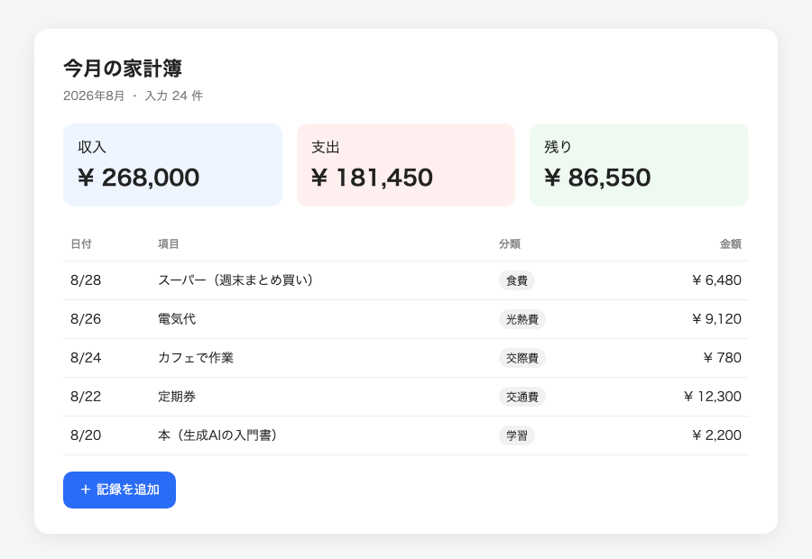

今月の家計簿アプリ
収入・支出・残りが一目でわかる、自分用のシンプルな家計簿
Excelで管理していた家計簿を、スマホでも見やすいWebアプリにしました。Claude Codeに日本語で頼みながら、分類の色分けと「残り」の自動計算を追加。
- 使ったもの
- Claude Code HTML / CSS / JavaScript
総務・経理の事務を8年。
2026年からDMM 生成AI CAMPで生成AIを学び始め、ChatGPTやClaude Codeで日々の業務を少しずつ自動化しています。
作ったものは小さくても公開して、同じ悩みを持つ人に届けるのが目標です。

収入・支出・残りが一目でわかる、自分用のシンプルな家計簿
Excelで管理していた家計簿を、スマホでも見やすいWebアプリにしました。Claude Codeに日本語で頼みながら、分類の色分けと「残り」の自動計算を追加。

ワークショップで作った、ブラウザで遊べるレトロゲーム
「小さく頼んで、遊んで確かめて、次へ」の進め方で、自機の移動から敵の攻撃・残機・ゲームオーバーまで7ステップで完成。防御壁も自分で追加しました。
文字起こしを貼るだけで、決定事項・宿題・期限が整う議事録テンプレート
社内の定例会議で毎回使っているプロンプトを、誰でも使える形に整理。「決定事項」「担当と期限」「持ち越し」の3つに必ず分ける工夫で、上司の確認時間が半分になりました。
日本語で指示してアプリを作る
関数・ピボット
メールでお気軽にご連絡ください。
penta.example@example.com